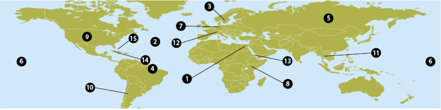

Unit 73 Exercise 1
Answer these geography questions. Choose from the box. Use The if necessary.

1 Cairo is the capital of Egypt.
2 The Atlantic is between Africa and America.
3 is a country in northern Europe.
4 is a river in South America.
5 is the largest continent in the world.
6 is the largest ocean.
7 is a river in Europe.
8 is a country in East Africa.
9 is between Canada and Mexico.
10 are mountains in South America.
11 is the capital of Thailand.
12 are mountains in central Europe.
13 is between Saudi Arabia and Africa.
14 is an island in the Caribbean.
15 are a group of islands near Florida.
Alps
Amazon
Andes
Asia
Atlantic
Bahamas
Bangkok
Cairo
Jamaica
Kenya
Pacific
Red Sea
Rhine
Sweden
United States